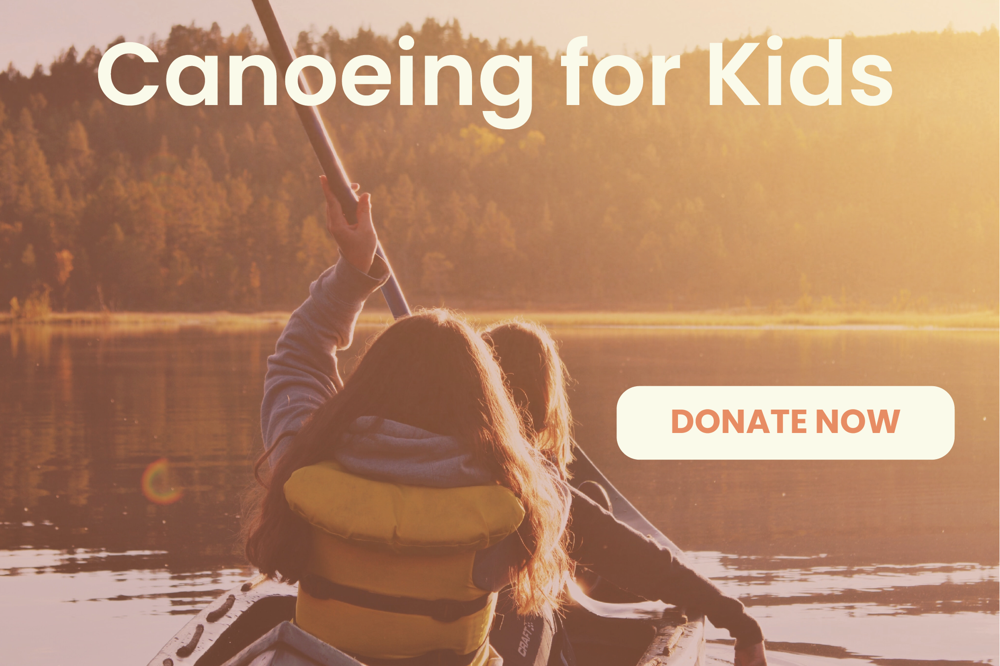

Solution
Preliminary design decisions for the website redesign
Call to Action
The image to the left is a call to action button designed for the website and a possible placement. The primary CTA button for Canoeing for Kids will be the donation button. The two main focuses of the website are to bring in more donations and to allow partnering organizations to sign up for trips. Many of the organizations will likely want to learn more about the company before jumping in to schedule. This makes the donation button a stronger focus as a large button on the home page to catch viewers’ attention as soon as they visit the site. Below I have included an example of what this may look like on the home page for the finished site.
Style Tile

The style tile above represents the look and feel that the redesigned website will have.
The mock-up on the left will be the website's new home page. It has a clear logo and nav bar at the top that will make the website easy to identify and navigate. The main header image is a clear representation of what the organization aims to focus on: canoeing for kids. The warm colors from the sun give a warm and welcoming feeling to the viewer. I also mocked up what the headers, subheaders, paragraphs, and linked text will look like.
I chose Poppins to be the primary typeface for the new Canoeing for Kids website. It is a geometric typeface and is reminiscent of lettering seen in the elementary school setting. It is open, warm, and inviting, which are some of the adjectives that I chose to focus the redesign around.
The colors were chosen to be fun and outdoorsy. The blue and green reflect the water and trees seen in the river and surrounding landscape, and the orange represents the sunset. These are also colors commonly seen on kayaks and canoes.
I also included some images in the style tile that I may use in the final website. I chose images related to canoeing that had bright colors to represent the fun and childlike elements of the organization.